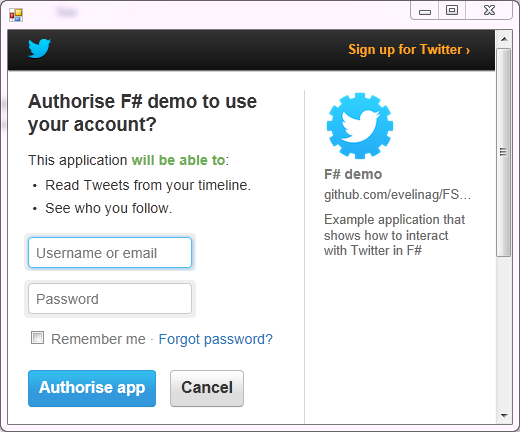

The Twitter type provider makes Twitter data easily accessible by providing a light wrapper around the Twitter API.
Twitter requires developers to register their applications to gain access to its API. You have to register your application at Twitter Apps. After registration, Twitter provides API key and API secret to authenticate the application.
// First, reference the locations where F# Data and
// F# Data Toolbox are located (using '#I' is required here!)
#I @"packages/FSharp.Data.Toolbox.Twitter.0.3/lib/net40"
#I @"packages/FSharp.Data.2.1.1/lib/net40"
// The Twitter reference needs to come before FSharp.Data.dll
// (see the big warning box below for more!)
#r "FSharp.Data.Toolbox.Twitter.dll"
#r "FSharp.Data.dll"
open FSharp.Data.Toolbox.Twitter
let key = "mKQL29XNemjQbLlQ8t0pBg"
let secret = "T27HLDve1lumQykBUgYAbcEkbDrjBe6gwbu0gqi4saM"
WARNING: Unfortunately, F# Interactive is quite sensitive to how you reference the packages when using F# Data Toolbox. To make the Twitter type provider work correctly in F# Interactive, you need to:
Use the #I directive to reference the path where the two libraries are located
(rather than usign #r with a full relative path)
Reference FSharp.Data.Toolbox.Twitter.dll before referencing FSharp.Data.dll
as on the first two lines above.
If you are using the Twitter provider in a compiled project, you will also need
to add reference to System.Windows.Forms.
This second point is required so that the JSON type provider (used in F# Data Toolbox) can locate
sample JSON files from the embedded metadata of the FSharp.Data.Toolbox.Twitter.dll assembly. An
alternative is to copy the sample JSON files
together with the assembly.
There are two types of possible connections to Twitter, application-only and full OAuth authentication. They provide different access rights and different number of allowed requests per time window.
The application-only authentication provides access that's limited to data reachable without the full user context. For example, it allows accessing friends and followers and searching in tweets. This is how the application obtains acess credentials:
let twitter = Twitter.AuthenticateAppOnly(key, secret)
This method of access provides full user context for the application. Compared to application-only access, it can also access Streaming, search for users and post tweets on behalf of the user.
To connect with OAuth, we first create a Twitter connector. with your user name and password. You'll get a PIN that you use as an argument for the Connect function. This user authentication allows full access to Twitter APIs.
let connector = Twitter.Authenticate(key, secret)
// Run this part after you obtain PIN
let twitter = connector.Connect("7808652")

After connecting to Twitter, you can call methods to access Twitter users, list followers and friends, search for tweets and access the global Twitter stream. All the methods send http requests to Twitter and return JSON documents. They are parsed using JSON type provider, which allows to access individual properties.
The following examples show how to access lists of followers and friends (followed accounts). Users can be identified either by their Twitter name, or by their user ID number.
// Get a list of ID numbers of friends and followers
// for the current signed-in user
// (requires full authentication)
let friends = twitter.Connections.FriendsIds()
let followers = twitter.Connections.FollowerIds()
printfn "Number of friends: %d" (friends.Ids |> Seq.length)
printfn "Number of followers: %d" (followers.Ids |> Seq.length)
// Get a list IDs of friends and followers for a specific user
let followersFSorg = twitter.Connections.FriendsIds(userId=880772426L)
let friendsFSorg = twitter.Connections.FollowerIds(screenName="fsharporg")
// Get information about connection between specific users
let fs = twitter.Connections.Friendship(880772426L, 94144339L)
fs.Relationship.Source.ScreenName
fs.Relationship.Target.ScreenName
fs.Relationship.Source.Following
fs.Relationship.Source.FollowedBy
We can also search for information about a list of users, specified either by IDs or by their screen names. It's possible to search for up to 100 users at a time.
let friendInfos = twitter.Users.Lookup(friends.Ids |> Seq.truncate 100)
for friend in friendInfos do
printfn "%s (@%s)\t\t%d" friend.Name friend.ScreenName friend.Id
We can search Twitter for tweets using keywords. The following snippet shows how to search for tweets containing the #fsharp tag.
let fsharpTweets = twitter.Search.Tweets("#fsharp", count=100)
for status in fsharpTweets.Statuses do
printfn "@%s: %s" status.User.ScreenName status.Text
Let's look at how to access Twitter timelines. Timelines show a stream of tweets from followed accounts.
We can access timelines for specific users, or the home timeline of the current signed-in user.
// Access home timeline
// (requires full user authentication)
let home = twitter.Timelines.HomeTimeline()
// Timeline of a specific user, up to a specified number of tweets
let timeline = twitter.Timelines.Timeline("fsharporg", 10)
We can display the Timeline in a web browser. We first create a web browser window. Then we download timeline for a specific user, in this case it's @fsharporg. Finally, we display individual tweets in the web browser.
open System.Windows.Forms
open FSharp.Control
open FSharp.WebBrowser
// Create a windonw wtih web browser
let frm = new Form(TopMost = true, Visible = true, Width = 500, Height = 400)
let btn = new Button(Text = "Pause", Dock = DockStyle.Top)
let web = new WebBrowser(Dock = DockStyle.Fill)
frm.Controls.Add(web)
frm.Controls.Add(btn)
web.Output.StartList()
// Display timeline
let timeline = twitter.Timelines.Timeline("fsharporg")
for tweet in timeline do
web.Output.AddItem "<strong>%s</strong>: %s" tweet.User.Name tweet.Text
// Access mentions timeline
// (requires full user authentication)
let mention = twitter.Timelines.MentionTimeline()
for tweet in mention do
web.Output.AddItem "<strong>%s</strong>: %s" tweet.User.Name tweet.Text
Streaming allows access to live Twitter data, as they're posted. To access Streaming API, the application must have full user authentication.
If we reuse the web browser window created in the previous code sample, we can display a random sample of tweets in the following way.
// Display stream with live data
web.Output.StartList()
let sample = twitter.Streaming.SampleTweets()
sample.TweetReceived |> Observable.guiSubscribe (fun status ->
match status.Text, status.User with
| Some text, Some user ->
web.Output.AddItem "<strong>%s</strong>: %s" user.Name text
| _ -> () )
sample.Start()
sample.Stop()
We can also search the Twitter stream for a specific hashtag or phrase. The following code will filter all tweets that contain the word "fsharp" from the global stream of tweets.
// Display live search data
web.Output.StartList()
let search = twitter.Streaming.FilterTweets ["fsharp"]
search.TweetReceived |> Observable.guiSubscribe (fun status ->
match status.Text, status.User with
| Some text, Some user ->
web.Output.AddItem "<strong>%s</strong>: %s" user.Name text
| _ -> () )
search.Start()
search.Stop()